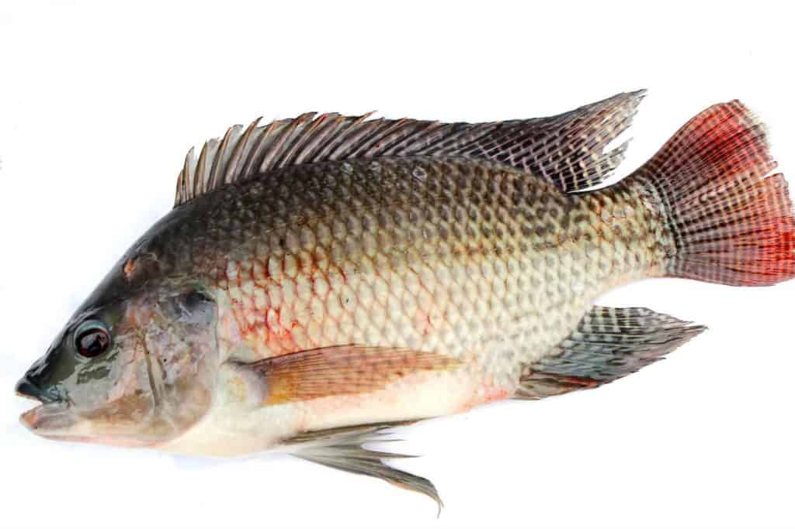

>
>
About Me
I'm Chikondi Dula, a passionate community development practitioner and an aspiring full-stack software developer. With a background in Fisheries Science and over four years of experience implementing communities development projects in Malawi and Rwanda. Through my work experience i have witnessed rural inhabitants missing or having limited access opportunities or knowledge that can improve their livelihoods.
This experience ignited the desire in me to solve real-world problems especially those affecting rural communities through technology. I joined the Power Learn Project to gain the technical skills needed to build digital solutions, such as web-based platforms that can support small-scale fish farmers, enhance market access, and improve service delivery in community development.
I believe in combining field experience with innovation to create impact-driven solutions.
Eduation Background
Bachelor of Science(Fisheries)
Faculty of Environmental Science
Mzuzu University, Malawi
2014 - 2019
Programming Languages
These are programming Languages i know some basics
Interests
I'm excited about the power of technology to create practical, life-changing solutions—especially for underserved communities. My main interests lie in full-stack web development, digital tools for agriculture and fisheries, and community-based tech innovation.
I'm passionate about building platforms that improve access to markets, information, and services—particularly for small-scale farmers, youth, and marginalized groups. I also enjoy exploring how data and software can support evidence-based decision-making in community development.
As I continue growing in software development, I’m especially drawn to projects that combine social impact with technology, turning challenges into digital opportunities.
Projects
Community Tree Nursery Platform
A web-based tool developed to help community members track seedling production, sales, and training sessions. Designed to support reforestation and income generation.
 height="300"
height="300"
Fish Farmer Resource Hub
An online platform prototype offering fish farming tutorials, pond management tips, and a local marketplace for fingerlings and feed.
Youth Enterprise Tracker
A simple database-driven concept to record and monitor businesses established by youth through your community initiative, aimed at tracking growth and success rates.
Contact Me
LinkedIn: Chikondi Dula